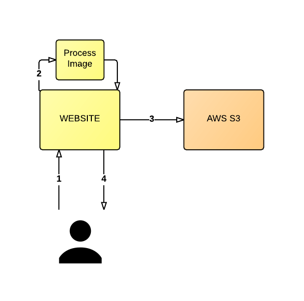
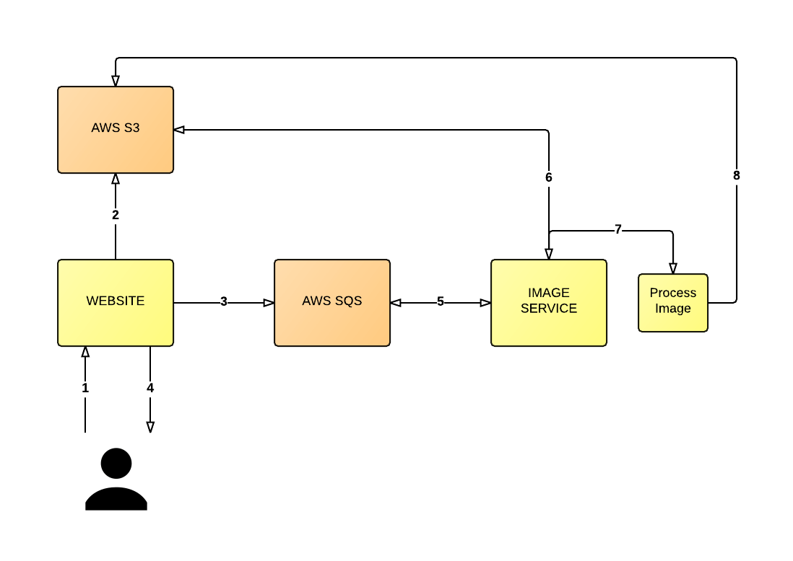
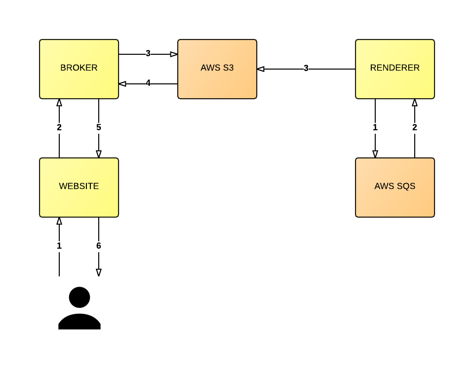
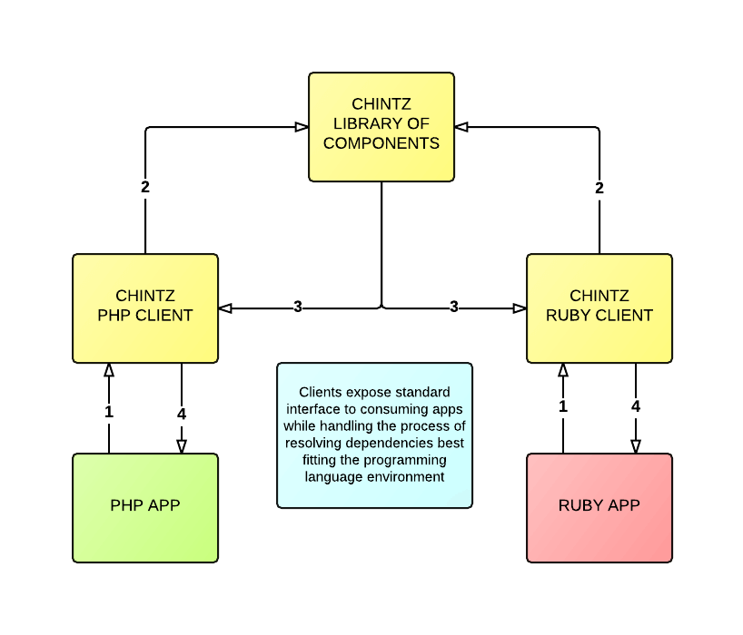
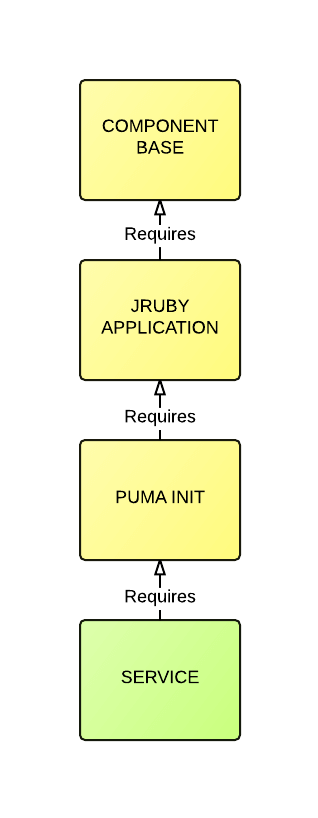

Designing for Simplicity
This post was originally written for David Walsh back in 2015. I’ve since decided to reproduce it here for my own records - Integralist: August, 2017.
Before we get started, it’s worth me spending a brief moment introducing myself to you. My name is Mark (or @integralist if Twitter happens to be your communication tool of choice) and I currently work for BBC News in London England as a principal engineer/tech lead; and I’m also the author of “Pro Vim”.
Quick shout out to Steven Jack who took the time to review this post. A lot of what we’ve done right, he either helped instigate or was a fundamental part of its success
The “responsive” BBC News website receives approximately 8 million visits per day (that’s on average for a quiet news day). Those numbers will go much higher once the responsive site replaces the current static desktop offering and starts to incur many more users. But for the moment that gives a rough idea of the sort of traffic we get on a daily basis.
This post aims to take a whirlwind tour of different code design and architectural discussion points that have cropped up at one point or another while I’ve been working at the BBC. We will be peeking at some top-level system infrastructure in a bid to provide you with some “food for thought” on these topics. I’ll talk about some techniques and tools that work for us, and we’ll also see some that didn’t work quite so well. I’ve always been intrigued by how other developers work and think about different types of problems, so let’s consider this a knowledge sharing experience from me to you.
Note: the thoughts and comments here are my own and do not necessarily represent those of my employer. Yup, I had to go there… just in case
Now some readers will probably not have to worry about the same sort of scalability problems the BBC has to deal with, when designing/building systems and applications. But this isn’t to say the information and thoughts I’m going to share with you here in this post aren’t transferable. In fact, much of what I’ll be discussing are concepts that can be utilized in applications of any size (because good design is effective at any scale).
Note: this post covers very little front-end technologies and techniques. That topic of discussion is much more vast and has been covered substantially over the past few years (especially the topic of performance, which has - since ~2007 - been brought into the mainstream mindset of front-end engineers by Steve Souders.
So without further ado, let’s begin…
Complexity vs Complicated
When describing a piece of software, you’ll often here the words “complex” and “complicated” used. We need to be careful when using these phrases that we select the one that accurately expresses our opinion. For example, some one might say a piece of software is “complicated”, when really they mean it’s “complex” (and vice versa). Unfortunately the definition of both these words doesn’t help to clarify which we should use and in which context. This can make it harder to express what we really mean to say.
For me, describing something as being “complicated”, infers a negative connotation (it has used either bad logic or implemented a bad design). Usually the phrase “this feels over-engineered” will follow.
The word “complexity” on the other hand represents to me a varying value (in that it’s dependent on the system being reviewed) and so it feels like a more appropriate term to use when recognizing the software’s design has evolved and become much larger over time.
You can also still apply the term “complex” to individual units of code. If a class or function is taking on too much responsibility then it can feel like it’s becoming too complex, and subsequently some of its logic will need to be extracted into another class or function. This is apposed to, let’s say, a function using a bad algorithm, in which you may identify that code as being “complicated”.
Now if a piece of software has a lot of moving parts (most applications do) and you have a difficult time building a mental model of it all, and subsequently are not able to follow its thread very easily, doesn’t necessarily mean the application is “complicated”. Lots of small, simple, and non-complicated functional components can be composed together to create a much larger system and subsequently can make the overall picture become a little harder to decipher. This is what makes software “complex”.
Good code design doesn’t always help you to see the bigger picture. What good code design does help with is making smaller functional units much more easily understood and composable (e.g. SRP - Single Responsibility Principle; one part of S.O.L.I.D).
The reason I’m mentioning this upfront is because I do not want people to walk away (mistakenly) thinking their existing software, or its architecture, is fundamentally flawed or broken. You must always take a critical eye to your systems/applications; but be aware that although they may be “complex”, that might be the natural order of things. A complete rewrite is not necessarily required.
Promoting simplicity
With the discussion of complexity behind us, let’s move onto what it means for software to be “simple”. Why is simplicity a good thing? Simplicity itself is defined as:
“the quality or condition of being easy to understand or do”.
If a piece of software is considered “simple”, then chances are it has been found to be easy to understand and easy to reason about. Simple software is also easy to manipulate and apply changes to. Kent Beck (renowned author of many top quality software engineering books and the co-creator of Extreme Programming, which then evolved into “agile” practices) made the following statement back in 2012:
“make the change easy, then make the easy change”
What Kent was referring to, was that for a piece of software to be easily changed you needed to simplify its design in such a way for it to be able to facilitate a future requirement.
Simplicity will also tend to result in less bugs, because there are less complicated moving parts. The irony of all this, is that writing and designing code to be simple is usually quite a complex task. It’s important to realize that simplicity != easy. Lots of people fail to make the distinction between the two.
Simplicity can also (not always mind you) help towards other goals such as reusability and portability of your software.
Naming things
Phil Karlton (Netscape engineer; sadly killed in 1997) once said:
There are only two hard things in Computer Science: cache invalidation and naming things
You’ve likely heard this quote said many times already throughout your career. There’s a reason for that: because it’s a painfully universal truth. Nothing causes our team to sit pondering in deadlock (or maybe livelock would be more accurate) together, than when we’re trying to figure out what to call our new library.
People underestimate how important it is to properly name things. Whether it be a new open-source library, a class, a function, a variable - it doesn’t matter what it is - there is a potential to cause confusion and in some cases real problems if named badly.
There’s the classic front-end dilemma where a developer creates a class called .red-banner because it is applied to a component that is, well, red; and then a month later the designers step in and change the component to have a blue background. Great, now this doesn’t seem like much of an issue but scale up the size of the site and the potential places where that class gets used; now add on top of that a little more ambiguity and you’ve suddenly incurred “tech debt”.
Now that was just a super basic example. In practice you’ll find naming issues everywhere. Does the name of your class truly represent its intent. Is the name you’ve used too explicit; by that I mean does it reference a particular object type or design aspect that restricts the class from being truly generic?
For example, if you have a class that acts as a mediator between two objects, have you named it “MessageBus” because you’re currently using the Observer/PubSub pattern? What if the class changes functionality to some other pattern or software? Surely naming it to be ComponentMediator would be better, as that is clear enough to express the intent of the class while open enough for the implementation details to change in future (sort of like a less concrete Open/Closed principle).
Either way, you need to not underestimate the problems and confusion that can be caused by a badly named object/class/thing. Be vigilant, and if you’re unsure then discuss it with your team. But be warned, this isn’t always a quick or obvious process.
Growth
Applications are organic; they grow and evolve over time, which can increase their complexity. But software also needs to contend with growing popularity, which means increased traffic and the need to always be available (i.e. up and running!). All software should have a modicum of scalability in mind when within the design stages. It would be foolish not to at least consider what happens when your system comes under heavy load.
The BBC has specific platform teams dedicated to carrying out load tests before any major software release. The benefit of this is to ensure that a new piece of software can run safely while handling x number of requests per second. The load test results help to indicate what an application’s threshold will be.
My team typically uses a command line tool called Siege to stress test our applications before requesting a full load test from our platform team, as this can help weed out any silly mistakes before going through official channels.
The BBC also utilizes Chaos Monkey (a tool developed by Netflix) to help verify the resiliency of its systems. Chaos Monkey itself has been instrumental in how we have started to look at designing and architecting our systems and applications.
The purpose of Chaos Monkey is to bring down (at random) a server instance that is currently running. This sounds like a crazy thing to do within your production environment; but the reality is it forces you to think long and hard at the design stage of your applications to ensure they are resilient and capable of being brought back up automatically.
At any moment, Chaos Monkey could bring down one of our servers running a public facing and highly critical application. This helps bring about an important realization that you need to start considering solutions before writing any code. By really thinking about the design up front, you avoid issues where you may find your existing software just isn’t resilient enough and is going to cause unacceptable service outages; and yet the existing system may well be in such a state that it doesn’t facilitate an easy path to becoming scalable (e.g. a monolithic application with many responsibilities and domain areas, will introduce a massive single point of failure and is going to take a long time to refactor).
Solutions to the problem of resiliency and scalability (at the design stage) could, for example, involve building microservices to help isolate single points of failure. As well as implementing stateless/immutable servers, where by you can bring up a new instance and not worry that critical state has been lost (along with service discovery mechanisms such as Consul or etcd). Infrastructure as code is another important concept and can be achieved using technology such as AWS CloudFormation (which we’ll discuss in more detail later on in this post).
Scaling a system to accommodate more users isn’t a free lunch; doing so can cause the introduction of inherent complexity, as it needs to consider many different mechanisms for facilitating an increase in traffic.
Typically the first thing developers do (before considering more extreme architectural changes) is to try running their code in parallel (or support more concurrent operations). There is nothing necessarily wrong with that, unless your code isn’t “thread safe”. Fixing the issue of thread safety isn’t always straight forward and if you’re new to the concept of multi-threaded code then you’ll likely hit a few stumbling blocks as you slowly start to understand the problem space.
If you’re interested in understanding thread safety (and the different concurrency abstractions) in more detail then I recommend you take a read of the following article “Thread Safe Concurrency”.
Along side the process of trying to speed up code by multi-threading, you’ll nearly always want to have your application scale automatically based upon the current needs of the system. If you’re application is running on an infrastructure that is designed to scale “horizontally” (e.g. it dynamically creates new server instances running your application) then you will quickly start to introduce the problem of data consistency.
Data consistency is where the “CAP theorem” comes into play. CAP states:
“it is impossible for a distributed computer system to simultaneously provide all three of the following guarantees: consistency, availability and partition tolerance”
What this means in practice is:
- Consistency: all nodes in your system should have the same view of the world
- Availability: a guaranteed response (whether a success or fail message)
- Partition tolerance: the system as a whole continues to function even when a part of the system completely fails (or messages between decoupled systems are lost)
The problem of growth can also affect the decisions made from both back and front-end development perspectives. For example, when building real-time data processing applications, you have the option of either long polling and handling back pressure vs Web Sockets vs Server-Sent Events; all with varying browser support, and each of these options opens up a different set of concerns regarding how the back-end system is architectured.
The problem of growth and scaling applications can be simplified by splitting up your application into well defined, isolated, functional units. If you’re working with a single monolithic application, try to imagine what it would look like if split up into multiple isolated services. Where each part of the application communicated with another service via HTTP (or TCP, or via some other low level mechanism). What would the system look like? Don’t you think it would be easier to analyze and scale individual services than one massive monolithic application?
This leads us nicely onto the topic of “Microservices”…
The micro fallacy?
As of 2014⁄2015, microservices is a bit of a buzzword. Lots of organizations and companies are talking about designing microservices and using tools (like Docker) to enable them to more easily build and scale their growing set of microservices.
I felt it was important to make a very quick mention of the fact that people tend to see a monolithic application as bad and a system of small services as good. While I would tend to agree, I would state that I’ve sat on both sides of the fence and each one has their pros and cons. If you’re working on a small scale system then a microservice design can be extra overhead and unnecessary complexity you don’t need. Just because all the cool kids are drinking the microservices koolaid doesn’t mean you have to (or should). Always take a critical eye to your design and evaluate things based on your own situation/requirements.
With that being said, I personally see microservices as the way we will, and should, be designing and building large scale systems moving forward; as overall it offers many more benefits compared to old school monolithic applications. It’s important when designing services that you split up the responsibilities in your application appropriately, and try to find a sweet spot between separation of concerns and domains vs fragmentation.
Decoupling systems
When considering the design of a complex system, we ideally want to decouple our code by individual domain areas. The reason for this is that it allows us to scale any particular part of the system that becomes a bottle neck; rather than carrying out a blanket scale up of the entire system; which is not only expensive but impractical.
Using the following diagram as a basis, let’s consider an application where the user uploads an image (1) and the server resizes the image (2) and places the newly created image into an AWS S3 bucket (3). The server is expected to return an auto generated URL to the user (4), which when shared with and visited by another user will show the resized image.

This architecture will not scale very well, nor very easily.
Note: for brevity I’ve left out some details from this architecture, such as persisting URLs
Instead the process should be more decoupled, like so (see below diagram): user uploads an image (1), the server stores the image into an S3 bucket in its original form (2) and sends a message to an AWS SQS queue (3). The server then returns a message to the user to inform them the image is being processed along with the auto generated URL (4).
In the mean time, a separate service is polling the queue for messages (5). The service will read the message (which can include the location of the source image in S3) and then retrieves the relevant image from S3 (6) so it can resize the image (7) and replace the image in S3 with the resized version (8), or whatever needs to happen at that point.

So this design might not be perfect, but what’s better about this architecture is that we’ve decoupled the various parts of the overall system that previously would’ve made scaling the application much harder. We’re now in a position to scale up the back-end service (the service that polls the queue and resizes the images) separately from the front-end system which handles the user upload.
If the user visits the auto generated URL before the image has been processed, then a message can be displayed to indicate the image is still being processed. Again, this isn’t perfect but it has freed up the user to go off and do other things, they’re not chained to the browser window watching a message that says “Processing…” for the next few minutes (or longer depending on how much load your system is under).
One practical improvement here is that the new system is much more fault tolerant than the original. In the original system, if the server crashed then the user would likely be returned a 500 HTTP Status Code, where as with the new system the user can continue to use the website (they’ll see the message “Image waiting to be processed” until a new back-end server instance can be brought up, where by it’ll continue to process messages off the image queue).
Note: fault tolerance is often referred to as “partition tolerance”; I mentioned this earlier when discussing CAP Theorem.
In the above example we’ve used queues to help decouple the individual parts of our software system (similar in spirit to creating microservices), but there are other mechanisms for decoupling code such as using a message bus. Best to research different techniques to see how your architecture could be designed to utilize them to avoid problems with scaling.
Note: depending on the purpose of the above application, you might decide that displaying the unoptimized image would be better than displaying a message to the user to say the image is still being processed. The reason I didn’t do that here was because of performance reasons (the size of the image could be very large and not something you want a mobile user to have to download - especially if they’re traveling with a poor network connection)
Broker/Renderers
At BBC News in London, my team have released an open-source framework written in Ruby called Alephant, which abstracts a common pattern we find useful for decoupling our data driven applications.
We’ve used this particular framework on quite a few projects over the past year and a half; such as the Scottish Referendum, the local and general elections, an upcoming redesign of BBC Newsbeat as well as the World Service Kaleidoscope project (dynamic serving of image based content to devices with poor support for non-latin fonts).
Note: I’d like to give a shout out to Robert Kenny (formerly of BBC, and now working at the Guardian) as the original inspiration and developer for the Alephant framework. Although it has changed quite significantly since its inception, it was his solid work that helped to support some very important and high traffic events.
The pattern is effectively a “broker” (i.e. mediator) and a “renderer”. With this pattern, user requests are routed through to the relevant broker, who then decides where the request(s) should be directed. On the other end of the design are a bunch of “renderer” services, and their role changes depending on the type of model we use: push or pull.
Let’s explore this a little further:
- Broker: a service which accepts requests (requests are handled differently depending on the model)
- Renderer: a service which gets data from an endpoint and renders it into HTML (or whatever format is required)
- Models: “push” and “pull” (we’ll see what each of these are in the next section)
Push
The push model is similar to the “image processing” architecture we discussed in the previous section, in that we’re using a queue to decouple our services.
In the push model, messages are placed on a queue. These messages contain data we want rendered into HTML (to use a real world scenario: the election results are pushed into a queue). We then have a renderer service running and this service polls the queue for messages. When a message (e.g. election result) is received we then process that message, render it into HTML and store that rendered content in a storage area (this could be any cloud based storage system, such as AWS S3, for example).
The renderer service is easily scalable because we can set alarm thresholds that indicate whether there are too many messages on a queue (i.e. if there are lots of messages waiting on the queue, then our renderer service isn’t processing them quick enough and so we need to scale up more renderer instances to handle the message load).
AWS SQS doesn’t guarantee a delivery order (this isn’t true of all queues - so if delivery order is important to you then there are other queue types available) and so care needs to be taken to ensure messages don’t get overwritten. We found this type of contention could happen when scaling up our Renderer service.
To give you an example, imagine we have two Renderers: R1 and R2. Both of them take a message off the queue. R1 gets version 1 of message “A”, while R2 gets an updated version 2 of message “A”. If R2 finishes first, then R1 will finish last and subsequently the older version of the message will be stored and used (a real and practical example of this is getting election results pumped onto a queue; the vote count for a particular party needs to be the latest numbers).
To avoid this contention we use a document store (AWS DynamoDB) to track the version of a message and when we come to store the rendered content of our data in our storage facility, we make sure the key we need to lookup that rendered content also includes its version number.
Note: this is something we did before DynamoDB added its “Conditional Put” feature
The broker in the push model, receives a request for a component, and is able to use the information it is provided to lookup the latest rendered version of a message. It does this by constructing a key that determines the location of the latest version within our storage facility. These lookups are also heavily cached to allow us to handle as much load as possible.
The following diagram gives you a top-level view of this architecture:

Note: for brevity, in the above diagram, I’m not demonstrating either the caching of broker requests or the sequencing requirements (i.e. the storing off the version of a message into DynamoDB). As mentioned before, some queues have different guarantees and so I didn’t want the diagram to be too tightly coupled to DynamoDB’s implementation
There is another concern that we’ve accounted for, but I’ve left out for brevity, which is AWS S3’s “eventual consistency” model. But I think for now this explanation should be enough to give you an idea of how the pattern works.
Pull
The pull model is simpler in that it doesn’t rely on a message queue for its data. In this model our renderers are more “connected” to our broker.
By this I mean: the broker will receive a request for a component, and it will use the information that has been passed with the request to lookup the relevant renderer it needs to contact (service discovery), in order to retrieve the requested component. The renderer service has a remote endpoint built in, that it uses to make requests to, to retrieve the data required for a successful render to happen (so no storing of rendered components into a storage facility; we’re dynamically renderering data upon request).
The reason we created this model was because we had certain domain models where the data changes were vast, and would require a large amount of up-front rendering that might potentially never be seen by (i.e. requested from) an end user. The BBC’s Market Data pages were an example of this, where some business data would rarely be viewed).
The following diagram gives you a top-level view of this architecture:
Note: for brevity, in the above diagram, I’m not detailing the complexity of how you feed information to a broker so it knows which renderer to interrogate to satisfy the user’s request
There are some pitfalls to this model though. The main one being we’re coupling our data to our templates. For example, if a change is required within the template (let’s say a HTML class attribute is added to an element; but all other “structure” of the content is the same), then it would require a complete re-render of the component.
We had experimented (briefly) with rendering the data itself, and then letting a layer further downstream handle the template composition, but this resulted in other complications. With looming deadlines and concerns regarding forcing responsibility for the templates onto some other part of the system, we decided to postpone.
Design and architecture
The reason we find the broker/renderer pattern so useful is because of how we’ve designed the individual libraries that make up the framework. They allow for consumers of the libraries to provide custom configuration to support their own specific requirements. We also use the strategy design pattern, for the pull model, which allows a consuming application to inject the logic the library should use to determine how to construct remote data endpoints (in case the storage location path is different for your set-up).
This is the essence of composability, it’s like lego bricks slotting together to form a large piece. Although you can utilise individual aspects of the frameworks that fit your needs (because each library is self sufficient in providing isolated functionality), the framework works best when utilized to form the broker/renderer pattern we primarily designed the framework around.
It’s an interesting mix of SRP (Single Responsibility Principle) and the composability of FP (Functional Programming).
How low can you (or should you) go?
For any performance critical (and scalable) application, it’s important to consider the overhead of certain technologies. For example, when it came to building the Alephant framework (discussed in the previous section), we decided that Sinatra (a very popular Ruby web framework that is preferred over a monolithic framework such as Ruby on Rails) was still too bulky for our needs.
By that I mean, it had all sorts of web related features that we didn’t need for our application. So we opted for the lower level (almost, but not quite, bare metal) Rack interface. Depending on your requirements, it may even be worth considering whether you drop down a level from HTTP to TCP or even UDP socket protocols if you genuinely don’t need the extra overhead of HTTP for communicating between services (e.g. you may have internal services running on your server instances that aren’t publicly exposed).
It’s important to realize that stripping back the layers of complexity can help to better reveal the intent of your code. Making it easier to understand and to reason about.
Language agnostic templates
At the BBC we discovered (the hard way) that our approach for managing the storage and deployment of front-end components wasn’t scalable. The problem stemmed from a more traditional method of structuring front-end applications, which meant separating JavaScript, CSS and images into separate folders.
Let’s for the moment consider the JavaScript folder: within this folder we would have multiple “modules” (a module being a single JavaScript file and represents an isolated piece of functionality). A single HTML component could well have multiple functional requirements meaning it would be dependent on multiple JavaScript modules.
This shouldn’t appear strange to any one as the majority of developers separate their concerns in this way. The downside though to this approach is that when your system begins to expand and evolve you will start to notice the problem of fragmentation and being tightly coupled to the application the components currently resides within.
By that I mean: if you have a HTML component and it relies on JavaScript modules X and Y as well as CSS files A and B, then you can’t easily reuse that component within another system without either replicating the directory structure that the current application utilizes or making code changes to reflect the location of dependencies within the new system. On top of that, the dependency tree for each component was getting larger and harder to visualize and maintain (as more and more functionality was being added to certain components).
In this classic architectural model you lose (or at least complicate) maintainability, reusability, portability and even the ability to isolate components for easier testing. The ability to share components across teams (who work on different platforms) was also proving difficult as we were being forced to duplicate content, and this led to the decision to create a specification that describes how to build truly atomic components that can be easily consumed by varying services.
Enter Peter Chamberlin and Liam Wilkins to take inspiration from both Brad Frost’s atomic design and Ian Feather’s Rizzo and helped to resolve this divide by creating the open-source project “Chintz” which combines the best aspects of both the former projects.
Note: this project is still WIP (work in progress) but we encourage the community to get involved and create an open discussion around how the specification evolves
The driving force behind this specification was for it to be language agnostic. This was a fundamental requirement in allowing different language platforms to consume these components. The processing of components has a few simple requirements:
- define a folder structure that will contain the components
- define a manifest that describe the dependencies for a given component
- implement a client parser that resolves the dependencies within the manifest
- build an app that consumes the client parser
In the following diagram we show how two separate platforms (PHP and Ruby) consume a parser specific to their language to resolve the dependencies for a given component and serve up the component(s) in the most appropriate way for their platform:

There are currently two (WIP) client parsers we’ve open-sourced:
Note: we also hope to implement one utilizing JavaScript/Node
A manifest file could look something like:
name: exampleElement
dependencies:
css: [ base/base.css, base/typography.css ]
js: [ exampleElement/someOtherFilename.js ]
elements: [ anotherThing ]
This manifest file makes it simple to understand the complexity of a single component.
The hope moving forward is for our internal component pattern library, built on top of Chintz, to be utilised across teams working on different platforms. For example, the BBC News core team work on a traditional PHP platform, while the Elections Presentation team develop cloud based components (generated with Ruby) that are consumed by the core team’s platform.
Automation and Duplication
When dealing with large software systems, you’ll need to ensure you’re automating things and reducing the amount of repeatable work you have. This is essential when managing software of any substantial scale.
There are a few ways my team automates and reduces duplication (you’ll likely find similar concepts and processes in many other teams and products):
- Continuous Delivery
- AWS CloudFormation
- Custom library abstractions
- Containerisation via Docker
Continuous Delivery
Deploying software within the BBC can be a complex process as we have lots of moving parts to take code from a developer’s laptop and into a working release that’s deployed to our cloud infrastructure. To make deploying software as simple as possible, we have since developed a complicated deployment pipeline to try and help achieve the end goal of having a “simple” release process.
Notice I said “complicated” :-(
We currently use the Jenkins continuous integration server to support our deployment process. Jenkins is an industry standard piece of software and no organization should be releasing software without some form of CI.
When we commit code into GitHub we trigger a build job on Jenkins that builds an RPM that we’ll want to deploy onto our distributed cloud servers. But before that deploy can happen we need to make sure that our software is safe to release. This means that we trigger another job that verifies this via different unit and integration tests for our integration environment.
If all is well we then trigger the next set of jobs that do the same for our test environment and once again for our live environment. If any one of these jobs fail then the deployment to that environment will be marked as failed.
Now the reason I used the word “complicated” earlier (rather than the more ideal “complex” - see the start of this blog post for the difference between them) is because we’ve fundamentally reached the limits of what the Jenkins software can handle and this has resulted in a solution that may work (most of the time) but is far to complicated to be maintainable. If a build breaks then it can be very hard to follow the trail because Jenkins wasn’t really designed with Continuous Delivery in mind.
Although Jenkins provides plugins to help extend its functionality so it can support more complex deployment pipeline processes, the various plugin options available aren’t as good as they could be, and most don’t offer a clear visibility of the status of a particular group of jobs. This is where something like GOCD, which aims to streamline the build-test-release life cycle, would come into the equation.
Jenkins has served its purpose, and we’ve found that it’s no longer a complex piece of software, but has moved into being more of a complicated one instead. If you find yourself in a similar situation, then this should be an indication that you need to be constantly monitoring your processes and evaluating their effectiveness.
Our Jenkins set-up works, so it’s “good enough” for the moment. But don’t fall into the trap of accepting the current system as being “good enough”. The moment you start feeling any pain setting up or implementing a piece of software, then much like a good code smell indicates the need to refactor, you should start re-evaluating how the situation can be improved. This is something we’re actively doing at the moment.
Remember not to make any rash decisions (e.g. let’s implement a whole new CI/CD system) that could potentially leave you with more tech debt than you initially realized; especially if your team has very tight deadlines already. Adding to your workload isn’t a sensible decision. Changing your deployment process is an incredibly important decision and so you must be absolutely certain you’ve exhausted all other options first.
AWS CloudFormation
If you’re unfamiliar with CloudFormation, then I’ll refer you to the official definition:
AWS CloudFormation gives developers and systems administrators an easy way to create and manage a collection of related AWS resources, provisioning and updating them in an orderly and predictable fashion
The AWS CloudFormation service is great for two primary reasons:
- It automates the ability to start up and provision a consistent and reproducible infrastructure
- It facilitates the ability to version control your infrastructure
With regards to the first point, this also facilitates a seamless setup of different deployment environments. This means we can configure each specific environment (using CloudFormation parameters) to allow, as an example, an integration and test environments to have very small EC2 server instances while stage and production environments have larger server instances (helping to keep costs down in our non-critical environments such as integration and test).
Depending on your experience with AWS you may feel like CloudFormation falls into the “complicated” category. This is very much a subjective opinion though, as learning CloudFormation may well (initially) feel quite confusing and complicated; the end result is a much simpler, quicker and easier way to build/automate a fully provisioned system.
There are also tools available that can help ease writing raw CloudFormation (which is just a JSON file). You could go one abstraction level up and start writing CloudFormation stacks using YAML or you could use a language specific DSL such as CFNDSL (which is a Ruby DSL).
Custom library abstractions
Most of our projects are built up from a baseline of abstract/generic libraries (RPMs) that provide us with specific default functionality. These abstractions make it very easy for us to construct a complex software stack without having to constantly repeat ourselves.
For example, consider the following three libraries:
- Component Base
- JRuby Application
- Puma Init
Each one of these libraries will add their own “profile” to /home/component. Each library will load their profile, which will add a hook for another downstream consuming library to utilize.
For example…
- Component Base: creates
/home/component/.bash_profile - The profile tries to source
/home/component/.custom_profile - JRuby Application: creates
/home/component/.custom_profile - The profile tries to source
/home/component/.component_profile - Puma Init: creates
/home/component/.component_profile - The profile tries to source
/home/component/.puma_profile
This allows our libraries to work in a similar fashion to the Template Method Pattern, where by subsequent inheriting layers can add their own behavior while overriding specific upstream configuration.
As well as the above profile files, each library adds its own additional behaviors. For example, the first library “Component Base” also sets up the following items:
- a
componentuser account - sets up the server instance to utilize our custom logging service
- defines an
/appdirectory with all the correct permissions - defines an init script that runs a daemon (set via
APP_DAEMON) APP_DAEMONcan be overridden by an upstream library
The second library “JRuby Application”:
- loads the “Component Base” as a dependency
- then loads the JRuby binary
This means a service that utilizes the “JRuby Application” library can develop an application that is either user-facing (e.g. has an exposed web service) or is an internal application that does data processing. It’s up to the developer to decide what they build.
The third library “Puma Init”:
- loads the “JRuby Application” as a dependency
- creates a
/home/component/.component_profilefile - this adds Puma specific configuration (and overrides
APP_DAEMONto reference Puma)
Puma is a popular multi-threaded Ruby web server
The following diagram provides a basic visualization of the inherited layers:

Each library acts as a layer that builds upon the last and provides specific functionality that extends the overall behavior.
Docker
Chances are you’ve already heard the hype around Docker and containerization by now. The simple fact is, we use Docker because it helps to keep applications small, focused (think “Single Responsibility Principle”) and most importantly “isolated” (think “decoupling code”).
Docker also helps to make installation of specific low-level software much easier, with standardized communication between running containers helping these services to interact.
We use Docker in a variety of different situations:
- Continuous Integration (using a standard master/slave set-up and each build job is its own container)
- Prototyping (super fast to get up and running using new software)
- Monitoring and Logging solutions
- Tooling (e.g. Spurious - see the following section - is built using Docker containers)
All that being said: Docker isn’t a panacea. It doesn’t fit all project requirements and in some cases it’s not the right solution at all. As with all things, consider the pros and cons and use where and when appropriate.
Tooling
The tools you utilize during (and post) development can be fundamental to the success of your project. I wont cover all the various tooling solutions we have in place (as there are just far too many), but there is one tool in particular I want to focus on: Spurious.
What Spurious offers is a set of AWS services that you can run locally (i.e. without costing you anything).
The AWS services it currently works with (CloudFormation and SNS to follow at some point in the future):
Currently there are helpers libraries that will configure the AWS SDK to utilise Spurious (making for an almost seamless integration into your application code). These libraries support Ruby, Clojure and JavaScript
Now this by itself is very useful. We can spin up an instance of Spurious on our machine and start writing application code that interacts with a queue (SQS), a record store (DynamoDB) and a data store (S3), along with caching requests (via ElastiCache). But on top of that is the Spurious Browser which allows us to peek inside each of these services using a standard web browser. Meaning, rather than having to waste time writing code to filter down a long list of results from S3; I can instead open Spurious Browser and click on a few links to drill down into the content I’m interested in and when I find it I can open the content to view it.
Spurious was born from the need to rapidly prototype new features for our Broker/Renderers, but to also avoid the whole deployment process
It’s still in development and has some rough edges (there is a rewrite planned, that will change the implementation language from Ruby to Go), but ultimately we’ve been using Spurious on quite a few projects now and it has become indepensible. I highly recommend you take a look.
FP, OOP and MVC
So far in this post we’ve been discussing top-level system and architectural design, tooling and other associated processes. In this section I want to take it down a level and briefly express my love for Functional Programming (FP), which will require me to make some comparisons to Object-Oriented Programming (OOP).
OOP and FP are two styles of development that have somewhat apposing interests. OOP is focused more around encapsulation of data, where as FP likes to filter data.
OOP consists of classes and creating objects where data is hidden inside them, but you can manipulate the data from exposed methods. Where as FP is generally a collection of pure functions that help to enforce referential transparency, and data is passed through these functions, manipulating it as it goes.
One of the big selling points for (most) FP languages is support for immutability. Immutability is a way of distinguishing state, identity and value. From a practical standpoint: if you modify data, then the changes will result in a modified copy of the original data (as apposed to mutating it).
We’ve seen a recent spurt of interest around immutability (and FP in general) in the JavaScript community as of late (with Mori.js and immutable-js as a couple of examples, but there have been others and they’ve been around for much longer). Immutability can help to eradicate a whole host of bugs that can catch you out in a language as mutable as JavaScript (and even more so in languages where code can be multi-threaded).
Languages like Clojure, for example, also implement persistent data structures, that make immutability easy and inexpensive. I recommend visiting the Clojure website and finding out more about the underlying implementation details, as it’s quite an interesting read
Typically you’ll find a mixed bag of opinions: some organizations are OOP based, others prefer FP. What’s worth being aware of is that this isn’t an “either or” situation. You can find some benefits from having the structural/encapsulation benefits of OOP while implementing certain features in a functional way (but I think that’s a topic for another day). The “OOP with FP” methodology is quite easy with a language like Scala which seamlessly incorporates both styles within their language design.
You’ll also find the Clojure programming language (which isn’t a strict FP language, although it offers many of the features you’ll expect to find), actually incorporates certain OOP principles in both the language API (as it’s built on top of the JVM and so it applies some idiomatic lisp syntax to creating Classes and Interfaces) and in some of its popular libraries developed by the open-source community. One example of this is the popular Component library that allows for easier management of the lifecycle of software components by encapsulating data.
The reason for a discussion around using OOP vs FP is because there are different pros and cons to both styles of development when it comes to high traffic, distributed and concurrent software systems. Although we’re primarily an OOP based organization and through good code design have not suffered any ill-effect from using OOP; some members of the team (myself included) have since been exposed to the greater simplicity and reduction of bugs that inherently occurs when utilizing FP and languages that natively support immutability.
Immutability is the key to avoiding complex mutexes and semaphores when writing multi-threaded code. To find out more on the subject please take a read of “Thread Safe Concurrency”.
One last point I’d like to cover is the (ab)use of the MVC pattern.
First of all, there is no official design pattern called “MVC” (if anything it could be considered an “architectural pattern”; but most people seem to refer to it as a design pattern). It is merely a collection of smaller patterns that have commonly been grouped together to form what is known as “Model, View, Controller” (lest we get caught up discussing the confusion around why so many developers design their software around a single global MVC architecture, as apposed to multiple smaller MVC structures within their applications - but that’s probably a discussion for another day).
Regardless of its apparent popularity, MVC isn’t always the right tool for the job. It’s worth being vigilant and recognising when you’re about to cargo-cult a particular technology or design pattern, because in a lot of cases MVC can actually be seen as overkill and add additional complexity and complication to your code that you don’t need. Let’s be clear here: MVC may well be the right choice for you; but I would urge you to investigate the merits of using it against an alternative set of patterns first that could help you simplify your software design (for example, a simple observer pattern can suffice for many applications; build up the layers of complexity as they’re needed - don’t go and jump straight in with an MVC framework).
The (ab)use of MVC has also become standard fare within the realm of front-end JavaScript libraries. Again, I’m not saying MVC is bad or wrong; but what I am saying is “do you need it?”. Remember to consider what it is you’re signing up to when you utilise a particular open-source (or even commercial) library within your application. Simplicity is the key.
Inherent complexity
There are some pieces of software and tools that are inherently complex by design. As an example, I want to demonstrate this by taking a look at our application deployment pipeline, which utilizes Jenkins and provides us with a full circle continuous deployment process.
The process can (roughly) be broken down into the following steps:
- Merge code into our version control system GitHub
- A webhook is set-up for our repository that alerts Jenkins
- Jenkins starts building our first job (pulls codes and installs dependencies)
- If that job passes, our job is configured to call another Jenkins job
- The next job runs our unit tests, and when they pass it again calls another job
- The next job builds and deploys our application to our integration server
- If the deploy is successful we call another job that runs our integration tests
- If the tests fail, then we mark the job as failed
- If the tests pass, then we trigger the next job which deploys to our test server
- Once deployed to test we again run integration tests and mark the deploy as either successful or failed
- If we’re good up until this point, then we will deploy to live
Now, even breaking down this process into individual (simplified) steps, I’m sure you can appreciate that this deployment process will look fairly complicated in practice; and it is. We’ve got multiple jobs that have been abstracted to a level where we can re-use them across multiple different projects, but this process of abstraction makes understanding what’s happening quite complicated because you have to context switch between Jenkins and GitHub.
One method of abstraction we used was to take advantage of IoC (inversion of control). In our jobs - to help us keep a record of changes to the build scripts - we decided the best thing to do was to pull down bash scripts from GitHub and execute them to implement specific functionality that had been abstracted away behind a reusable function. This is what allows us to create generic jobs that can be reused across many different projects.
This happened because we tried to approach our build jobs the same way we would application code; and although we have a nice DRY set of build jobs, it’s a difficult thread to follow (especially when there is an error within a section of your deployment pipeline - it can become quite hard to locate and debug).
This is one of the primary reasons we feel our current solution is “complicated”. It’s because Jenkins wasn’t designed with this type of complex workflow in mind, and so although there are plugins that can help visualize and construct full deployment pipelines, they’re not ideal. I wont go into the details of why, as that’s a little outside the scope of this article, but trust me: it’s a bit of a hack to get continuous delivery pipelines working really smoothly in Jenkins.
In a bid to simplify our deployment pipeline we have planned to take the following approach to resolve our issues with Jenkins (note this approach might not work for you, and dependent on your team, your mileage may vary):
- Reduce our multiple connected generic jobs down into a single job; meaning we’ll manually pass in the environment we wish the component to be deployed to, every time the job is run (this is a temporary measure, as it gives us a sane baseline from which we can build upon)
- We will then investigate alternative methods for making Jenkins work with complex deployment pipelines (such as Jenkin Templates)
- Then, when we get capacity within the team, we’ll look to set-up GOCD which we set-up as a tech spike previously and found it worked very well with our team’s workflow.
Containerization
As of 2014⁄2015 the tech world is buzzing about Docker. If you want to find out more about what Docker is and how it works then I recommend going through their website as it has a wealth of good information. But in summary: a docker “container” is an isolated set of processes that can be connected with other “containers” to create different types of software applications, but in a more manageable way.
One of Docker’s biggest selling points is the mantra: “build once, run anywhere”. This means you can define your requirements and be confident that it’ll run the same, whether your platform is AWS ECS, Google Cloud Compute or Tutum.
A simple example usually given to demonstrate how Docker might be used in a traditional web development workflow is: create a Docker container that runs your web app, then create another container that runs your database and in another container you might have a caching service (e.g. Redis or Memcache). All of these containers can be linked together by Docker so they can communicate safely with each other while providing decoupled isolation.
This description doesn’t do justice to what Docker can offer though and if you’ve not played around with it yet then I strongly urge you to try it out. To give you some ideas, I’ve listed below a few different ways we utilize Docker, and raise some small points about with using it as well.
Here are some use cases we apply Docker to:
- Continuous Delivery (each Jenkins job is a fresh container, with an isolated set of dependencies - this allows us to avoid the issue of developer’s wanting to upgrade specific software versions and being told they can’t because an updated version will cause issue for other products)
- Dynamically building sandboxes at runtime which host specific GitHub branches (for sharing with stake holders)
- Tech spikes (Docker allows us to focus on features and not get caught up with installation/configuration issues)
- Helping us to better structure and develop software (Spurious uses Docker to run each of the faked AWS services)
Containerizing your applications will likely become the standard software architecture design pattern in the very near future, so it’s worth your time playing around and getting to grips with the tools available, and how best to break down your potential monolith into decoupled microservices.
But with that said, what are the current pain points for containerizing all your software? Are there times when you wouldn’t want to use it? Well, there are a couple of things worth considering:
Tooling
The tooling available to debug containers is still considered to be quite immature. Docker does offer both a log command as well as an exec command (which lets you jump into a running container using a bash shell); but there can be instances where neither of those options will yield success.
For example, a container wasn’t logging any thing, and on top of that the application (which when run outside of the container, would run forever in an infinite loop) would run initially and then stop when run inside the container, and so the exec command was not an option as I couldn’t jump inside a container that was no longer running.
Note: in the latest binary Docker has provided additional stats that are exposed via the
docker stats {container}command
Scaling
Scaling containers requires a new approach that might not fit your current infrastructure model. Also, the question of scalability could potentially be simplified by the upcoming release of Docker’s “Swarm” feature; which offers the ability to control a cluster of machines running Docker via a single endpoint. But how easily this makes actually scaling a cluster of running docker instances within a single host, remains to be seen in practice.
Traditional “vertical vs horizontal” scaling is quite straight forward: with vertical scaling you increase the size of the box running your application; where as with horizontal scaling you increase the number of boxes instead. The ability to horizontally scale a cluster of docker containers might not be so straight forward.
Imagine I have an EC2 server instance running with an auto scaling group that creates a new server instance when the CPU reaches 70%. On this instance I have a web service running inside a Docker container and it’s maxing out its resources. We’d have to use custom metrics fired off from our Docker container to AWS CloudWatch, which would allow us to define an alarm that triggered a new server instance to be created. Otherwise our ASG wouldn’t catch the Docker container failing.
Docker Swarm, could help here (it’s not released yet and we’ve not had a chance to try an early pre-release)? But it appears to only work by having a pre-created pool of servers, rather than dynamically generated server instances. Maybe once we see an official release and get the opportunity to see it in action we’ll find it handles the issue of scaling perfectly. But until then, it’s just something to consider before going too far ahead with designing your infrastructure around Docker.
Orchestration
Running Docker containers can result in very long commands that are difficult to visually parse and take a long time to retype. This is the primary problem orchestration tools such as (the soon-to-be released) Docker Compose are aiming to solve. I’ve used an early release of Docker Compose and it seems promising. It definitely helps to document the infrastructure set-up (much like AWS CloudFormation does) and allow for easily reproducible environments.
Layers
This is actually quite a specific concern, and one that might not really have any practical basis or realistic solution (from an implementation point of view, or because there are already work arounds); but I’ve found building images that need to utilise private security authentication credentials to be more awkward than it feels like it should be.
When building a Docker image, you’re constructing it from multiple layers (this allows Docker to create an image using cached layers and greatly improving the build performance), but this means if you add your security credentials then they’ll be baked into the resulting image. I would prefer it if it was possible to remove layers so that you could add the credentials, pull down further resources within the Docker image and then remove the layer that included your credentials.
The work around to this is to build a new image from an already running container which has already mounted your credentials. Now there is nothing necessarily wrong with this approach, it just doesn’t feel very clean either. I may be complaining about nothing, but it’s something that’s stuck with me. I’d be interested to know how other organizations and developers are handling building images with private authentication.
An alternative suggestion from Steven Jack was that maybe Docker could add build time environment variables. These would allow you to provide your security credentials at the point of building your image rather than having them baked inside of the image. For example:
docker build -t some/image -e MY_SECRET=KEY
Optimizing user experience
I said at the start of this post that I wouldn’t be covering very much front-end technologies because they were vast, complex and the recommended patterns seem to change on a regular basis. But this isn’t to say there aren’t things you should be doing when designing your user facing applications. Below is a short list of topics that you should spend some time investigating:
- Performance: since 2007 Steve Souders has been the godfather of front-end performance. Read his books and his blog posts. You’ll see a massive improvement from following his best practices (which are pretty much industry standard nowadays).
- React is a “JavaScript library for building user interfaces”. I wont go into the details of the library here, but suffice to say it offers a lot of interesting features, such as implementing a Virtual DOM for high performance; no templates for building interfaces and avoiding two-way data binding in favor of “reconciliation diffing”.
- Immutability: this is a tenet of Functional Programming and is finally starting to see a rise within the JavaScript community. There are a few different libraries available to support immutable data, such as immutable-js and Mori. I would recommend trying out these libraries, as immutability can help to reduce a whole host of hard to reason about bugs.
- BEM: Block Element Modifier is a predescribed notation for writing CSS that allows it to reduce complexity/specificity, while increasing maintainability and reusability. Harry Roberts has written extensively about it; and in fact I would recommend reading anything he has to say on the subject of CSS and how to write it to support large scale applications.
- RWD: Responsive Web Design is neither new or an easy topic. There is a myriad of techniques for implementing RWD properly and in a progressively enhanced/performant fashion. I would recommend reading anything Brad Frost has to say. See his Pattern Library for lots of good code examples.
Where have we succeeded/failed?
Admitting failure is never easy, and so you don’t often see blog posts describing how some new feature or technology didn’t quite work out as planned. I’m personally of the opinion that recognizing situations where we’ve failed (and aiming to “fail fast”) is a healthy way to react. Much like in the world of distributed computing, you have to accept the fact that services are going to fail and instead focus on improving the situation if it were to arise.
With this in mind, I can say that our current deployment pipeline (using Jenkins) hasn’t worked out that well for us (as described earlier in this post). It’s a bit convoluted and definitely feels too complicated to be used for much longer. Making changes to our deployment process is not easy, and can take quite some time for an engineer to build up a mental model of the pipeline in their head. We shouldn’t have to be following a thread in the manner we do at the moment.
Also, although we mark a release as failed if any of the unit/integration tests fail; we still have to manually revert the release which is not good at all. It’s hard to explain why this hasn’t been solved yet, without getting lost in technical details that are very specific to our infrastructure. This is a problem we are still very keen to resolve in order for us to get a true CD experience in place.
With that being said, we’re aware of this problem and are pro-actively looking to resolve the problem by following these steps:
- Simplify the problem (get a baseline that works)
- Carry out a technical spike for GOCD (understand if it’ll fit our needs)
- Implement new solution based upon results of technical spike (i.e. GOCD or Jenkins Template)
Continuous Delivery can be a hard problem to solve in a non-complicated manner. So you have to be practical with the approach for finding a solution.
Something else I’ve realized, is that we’re slowly cargo-culting our Alephant framework. By that I mean: we’re finding ever more ways of fitting the framework to suit the project rather than designing a solution around the problem space. This should not happen. Each project has a unique set of requirements that need to be considered; and if the problem can be solved nicely and efficiently using the pre-described “broker/renderer” pattern the Alephant Framework implements, then great. But we shouldn’t feel required to use it… you know, just because.
With regards to our abstracted RPM libraries: even though we’ve separated certain related functionality into individual libraries, we could still extract certain configuration into their own isolated libraries. For example, our “Component Base” includes setting up logging on a server instance, as well as defining app specific configuration. Some of our components literally only need logging provided “out of the box” and nothing else; so extracting this into a logging library means those components can require it as a dependency while also allowing “Component Base” to consume it as well. This gives us even more flexibility and granularity of control.
When we originally were building our monitoring solution we were able to prototype it really quickly using Docker. We had containers linked together that were using Graphite and Grafana, but we soon realized this set-up wouldn’t scale when along came Chaos Monkey and wiped out our instance in one hit. We needed these services to be decoupled to improve the resiliency. This was an instance where Docker wasn’t necessarily the best tool for the job. This helped us to improve our solution by changing to use InfluxDB instead and thus reduced the moving parts (as Graphite is actually made up of three separate applications: Whisper, Carbon and Graphite-web). We were then able to run InfluxDB and Grafana as separate services using traditional applications rather than Docker.
In some places we’ve succeeded by catching ourselves trying to over engineer specific solutions. As an example, we recently had a need to archive some components that our Alephant Framework was used to render. We needed to move the rendered components from one S3 bucket to another S3 bucket. This archiving process would only happen once (after the event the components were associated with - so this wasn’t a service that needed to run 24⁄7). We initially started setting up an EC2 server and all that goes along with deploying it via our own infrastructure (which is an abstraction on top of AWS), only to find that really the best solution was to utilize the new (as of 2015) AWS Lambda service; which was built specifically for these isolated event based scenarios. It helped to simplify the solution itself as well as reduce overall costs. Plus we had the opportunity to play around with some new technology; which is always fun :-)
Summary
So here we are finally at the end of my whirlwind tour of software design and tooling. We’ve covered mainly back-end/dev-ops related technologies and ever so briefly considered some pointers for the front-end.
It’s difficult to reduce many many years of front-end and back-end experience into a single blog post. You may as well write a book (or two, or three) instead. The idea behind this post was to provide a taster for what the current thought process is with regards to our entire tech stack as of 2015. Some of these ideas will become standard practice, others will quietly fade away. But we must always be open to change and experimentation and finding ways to simplify our processes rather than over engineering them and promoting unnecessary complexity.
I hope some of what you’ve read here was enlightening. Feel free to get in contact with me via GitHub or Twitter using the handle “integralist”.